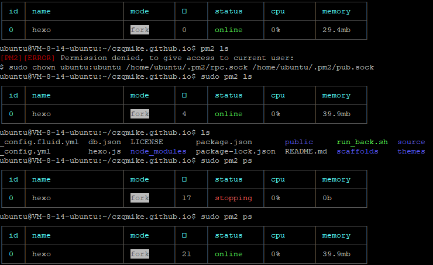
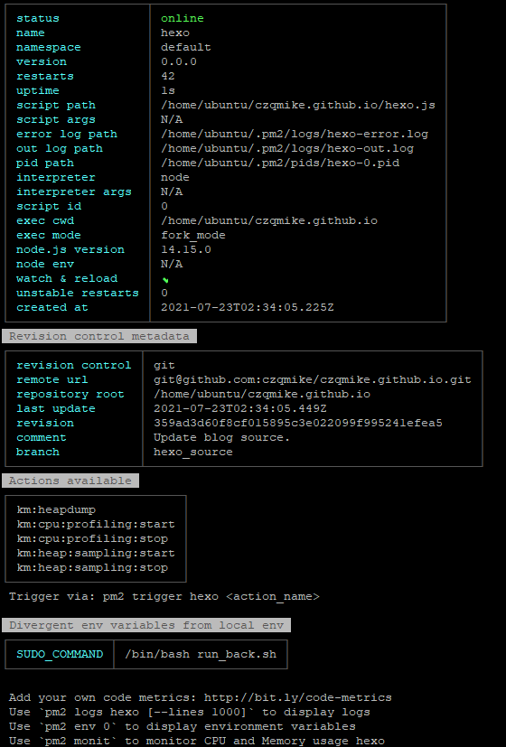
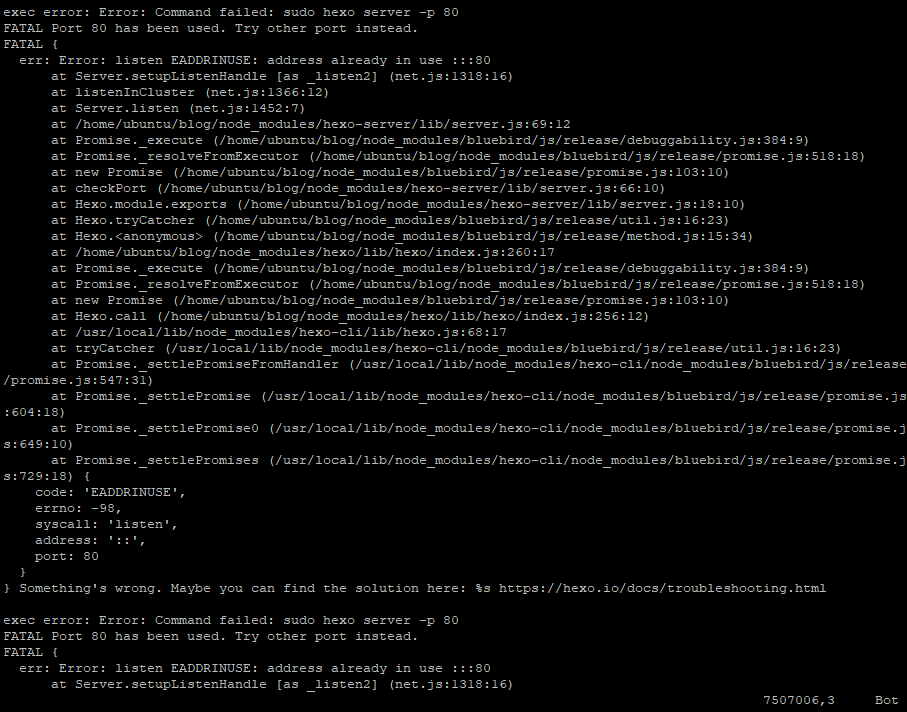

记一次blog排错
本文最后更新于：38 分钟前
记一次blog排错
因为听信了网上的一个建议，reboot server想去激活
.bashrc，结果导致好不容易稳定的blog又挂了:(
刚好今天有点时间，就来debug了下挂的原因并在此记录一下思考过程。
先讲一下现在的blog架构：
现在的blog架构是 [server -> hexo.js (=hexo server -p 80) -> pm2代理hexo.js] 一把梭。
版本管理方面则是github上的双版本管理，用一个master分支发布编译后的静态页面文件，用hexo_source分支发布md源文件。
这个管理方案可以参见此。
之前也常常出现防火墙是ok的，ping得通，端口开放了，程序运行状态正常但是就是刷不出来blog的情况，但是都没有在意，以为是方案稳定性不够的锅。
出现问题
这次重启后也是照常跑服务器脚本：
1 | |
出现的问题也还是网站无法访问，server ping得通，我开始ps看有无异常：
1 | |
结果如下：

可以看出，有个不明所以的小方框一直在自增，进程states一下变成online一下变成stopping.
定位问题
我有点疑惑，查阅文档，发现有describe命令可以看pm2详细的参数。
1 | |

结果发现这短短的几十秒里进程重启了42次！
于是我打开log看详细过程：
1 | |

一看log，原来是80端口被占用导致的进程启动失败，而pm2会自动重启失败的进程，重启过程中会发现还是被占用于是继续重启，最终导致无线月读。。
解决问题
知道了问题在哪，接下来就好办了，找到进程杀死之即可，netstat发现有个pm2的godmode进程在后台清不掉，kill掉后手动重启pm2服务后发现网站能打开了。
1 | |
Over.
本博客所有文章除特别声明外，均采用 CC BY-SA 4.0 协议 ，转载请注明出处！